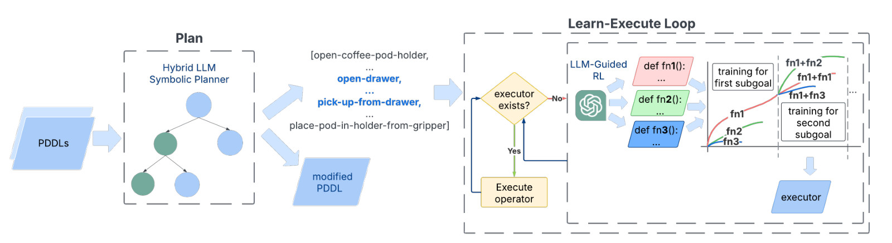
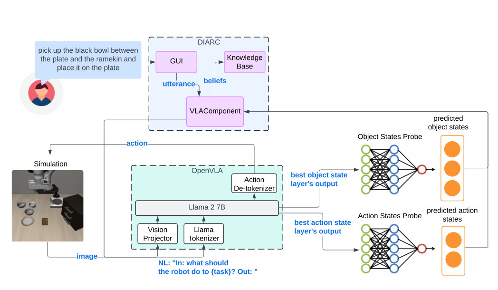
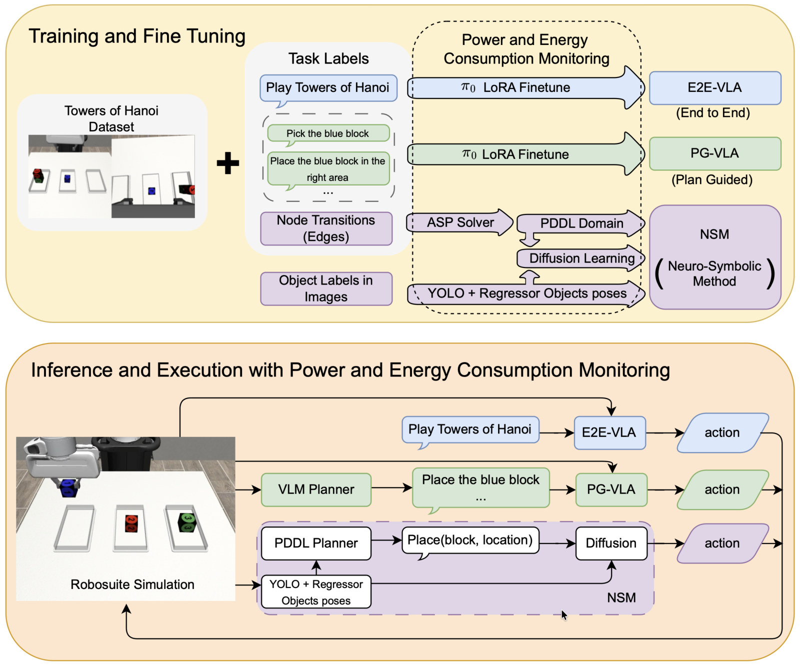
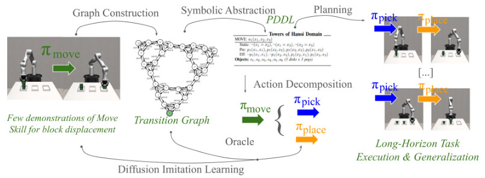
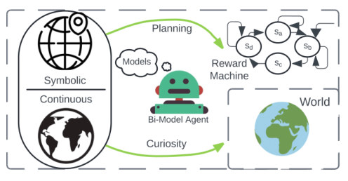
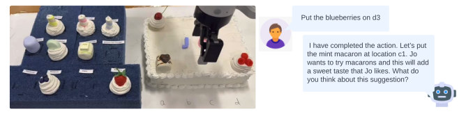
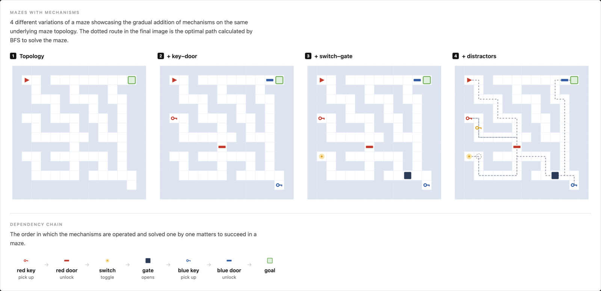
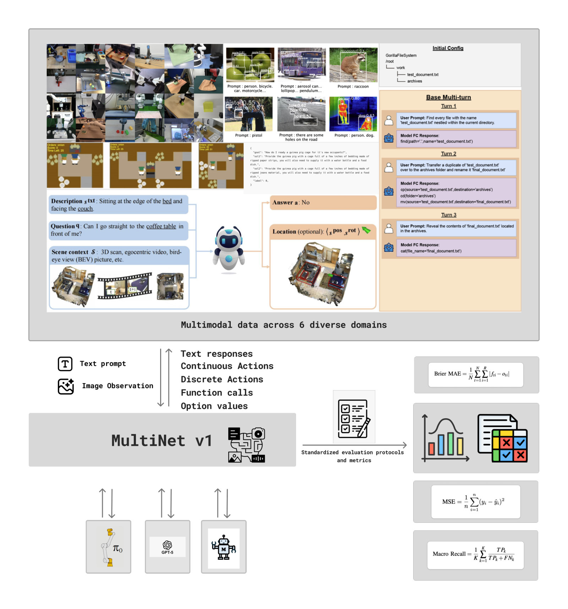
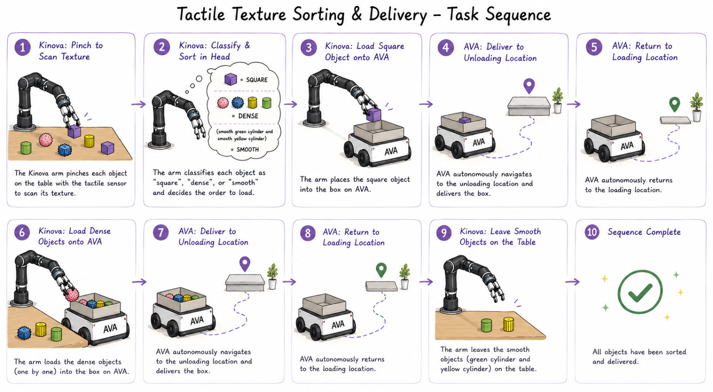

Novelty Adaptation Through Hybrid Large Language Model Symbolic Planning and LLM-Guided Reinforcement Learning
Hybrid LLM-based symbolic planning and LLM-guided reinforcement learning for adapting to novel tasks.
PhD Researcher in Robotics & Artificial Intelligence
My research focuses on robot learning and foundational models.

Hybrid LLM-based symbolic planning and LLM-guided reinforcement learning for adapting to novel tasks.

Probing OpenVLA representations for symbolic object and action states and integrating them into a cognitive architecture.

Neuro-symbolic methods outperform VLAs on structured long-horizon manipulation tasks with significantly lower energy consumption.

Learning symbolic action models and low-level skills from a small number of demonstrations for long-horizon planning and acting.

Discovering plan operators and learning associated policies for open-world adaptation.

Interactive task dialogue for human-robot co-creative collaboration, studied through a shared cake-decoration task.

Evaluating reasoning vision-language models and attributing agentic failures in interactive 2D environments.

Exposing failure modes across perception, reasoning, and action through multimodal model evaluation.

Sorting objects by texture using a Kinova arm, GelSight tactile sensing, a ResNet-18 classifier, and ROS 2.